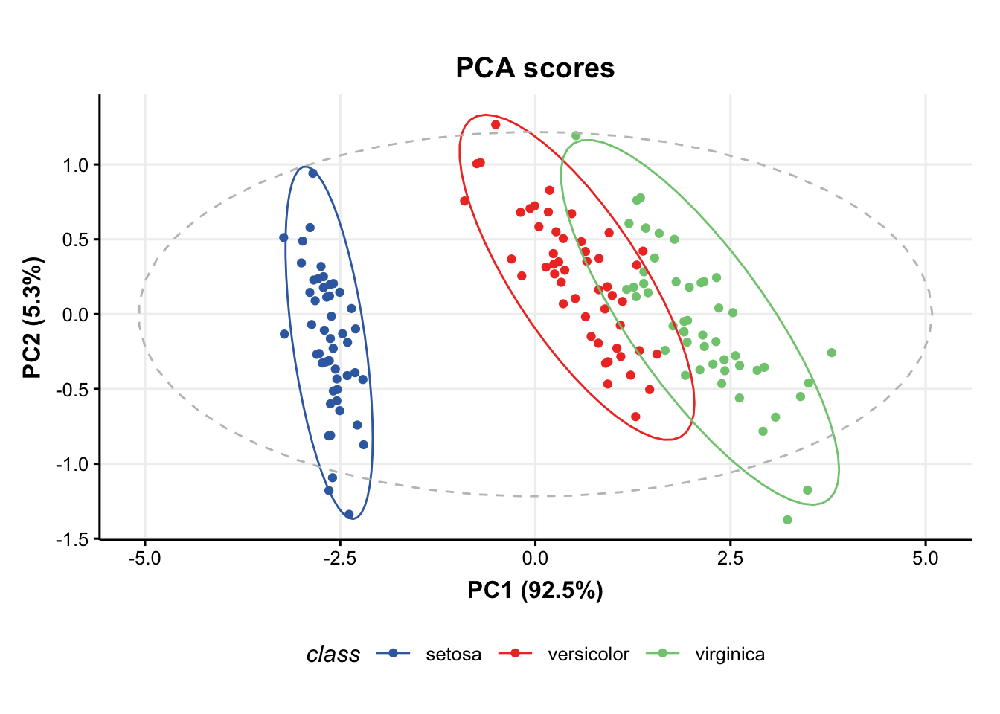
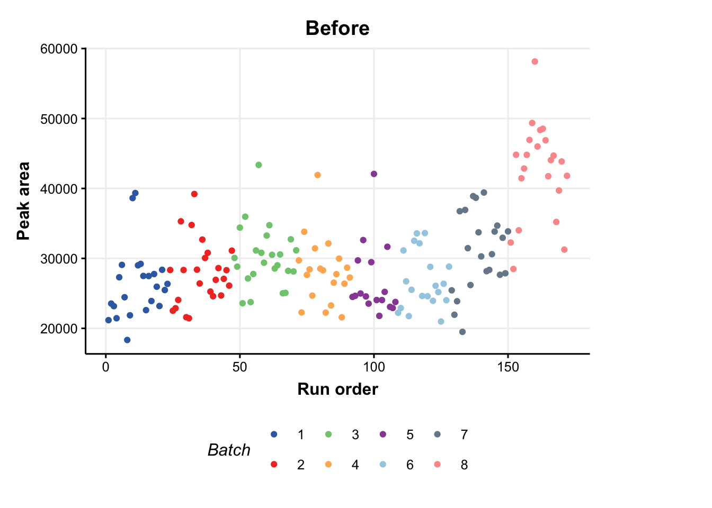

![]()
pacman::p_load(
### BiocManager packages
structToolbox,
pmp,
ropls,
BiocFileCache,
### CRAN packages
cowplot,
openxlsx,
ggplot2,
gridExtra
)
### use the BiocFileCache
bfc <- BiocFileCache(ask = FALSE)Packages
Dataset
### iris dataset
D <- iris_DatasetExperiment()
D$sample_meta$class <- D$sample_meta$Species
D
## A "DatasetExperiment" object
## ----------------------------
## name: Fisher's Iris dataset
## description: This famous (Fisher's or Anderson's) iris data set gives the measurements in centimeters of
## the variables sepal length and width and petal length and width,
## respectively, for 50 flowers from each of 3 species of iris. The species are
## Iris setosa, versicolor, and virginica.
## data: 150 rows x 4 columns
## sample_meta: 150 rows x 2 columns
## variable_meta: 4 rows x 1 columns
head(D$data[, 1:4])
## Sepal.Length Sepal.Width Petal.Length Petal.Width
## 1 5.1 3.5 1.4 0.2
## 2 4.9 3.0 1.4 0.2
## 3 4.7 3.2 1.3 0.2
## 4 4.6 3.1 1.5 0.2
## 5 5.0 3.6 1.4 0.2
## 6 5.4 3.9 1.7 0.4Using {struct} model objects
### Statistical models
P = PCA(number_components=15)
P$number_components <- 5
P$number_components
## [1] 5
### the input for a model can be listed using:
param_ids(P)
## [1] "number_components"
P
## A "PCA" object
## --------------
## name: Principal Component Analysis (PCA)
## description: PCA is a multivariate data reduction technique. It summarises the data in a smaller number of
## Principal Components that maximise variance.
## input params: number_components
## outputs: scores, loadings, eigenvalues, ssx, correlation, that
## predicted: that
## seq_in: data
### model sequences
M = mean_centre() + PCA(number_components = 4)
M[2]$number_components
## [1] 4
### training/testing models
M = model_train(M, D)
M = model_predict(M,D)
M = model_apply(M,D)
output_ids(M[2])
## [1] "scores" "loadings" "eigenvalues" "ssx" "correlation"
## [6] "that"
### model charts
chart_names(M[2])
## [1] "pca_biplot" "pca_correlation_plot" "pca_dstat_plot"
## [4] "pca_loadings_plot" "pca_scores_plot" "pca_scree_plot"
### plot PCA scores plot
C = pca_scores_plot(factor_name='class') # colour by class
chart_plot(C,M[2])
# add petal width to meta data of pca scores
M[2]$scores$sample_meta$example=D$data[,1]
# update plot
C$factor_name='example'
chart_plot(C,M[2])
# scores plot
C1 = pca_scores_plot(factor_name='class') # colour by class
g1 = chart_plot(C1,M[2])
# scree plot
C2 = pca_scree_plot()
g2 = chart_plot(C2,M[2])
# arange in grid
grid.arrange(grobs=list(g1,g2),nrow=1)
Typical workflow
Dataset
The MTBLS79 dataset represents a systematic evaluation of the reproducibility of a multi-batch direct-infusion mass spectrometry (DIMS)-based metabolomics study of cardiac tissue extracts. It comprises twenty biological samples (cow vs. sheep) that were analysed repeatedly, in 8 batches across 7 days, together with a concurrent set of quality control (QC) samples. Data are presented from each step of the data processing workflow and are available through MetaboLights (https://www.ebi.ac.uk/metabolights/MTBLS79).
# the pmp SE object
SE <- MTBLS79
# convert to DE
DE <- as.DatasetExperiment(SE)
DE$name <- "MTBLS79"
DE$description <- "Converted from SE provided by the pmp package"
# add a column indicating the order the samples were measured in
DE$sample_meta$run_order <- 1:nrow(DE)
# add a column indicating if the sample is biological or a QC
Type <- as.character(DE$sample_meta$Class)
Type[Type != 'QC'] <- "Sample"
DE$sample_meta$Type <- factor(Type)
# convert to factors
DE$sample_meta$Batch = factor(DE$sample_meta$Batch)
DE$sample_meta$Class = factor(DE$sample_meta$Class)
# print summary
DE
## A "DatasetExperiment" object
## ----------------------------
## name: MTBLS79
## description: Converted from SE provided by the pmp package
## data: 172 rows x 2488 columns
## sample_meta: 172 rows x 6 columns
## variable_meta: 2488 rows x 0 columnsSignal drift and batch correction
A batch correction algorithm is applied to reduce intra- and inter- batch variations in the dataset. Quality Control-Robust Spline Correction (QC-RSC) is provided in the pmp package, and it has been wrapped into a structToolbox object called sb_corr.
# batch correction
M <- sb_corr(
order_col = "run_order",
batch_col = "Batch",
qc_col = "Type",
qc_label = "QC"
)
M = model_apply(M, DE)
## The number of NA and <= 0 values in peaksData before QC-RSC: 18222
### plot of a feature vs run order, before and after the correction
C = feature_profile(
run_order='run_order',
qc_label='QC',
qc_column='Type',
colour_by='Batch',
feature_to_plot='200.03196'
)
# plot and modify using ggplot2
chart_plot(C,DE) + ylab('Peak area') + ggtitle('Before')
chart_plot(C,predicted(M))+ylab('Peak area')+ggtitle('After')
M2 = filter_na_count(
threshold=3,
factor_name='Batch'
)
M2 = model_apply(M2,predicted(M))
# calculate number of features removed
nc = ncol(DE) - ncol(predicted(M2))
cat(paste0('Number of features removed: ', nc))
## Number of features removed: 425